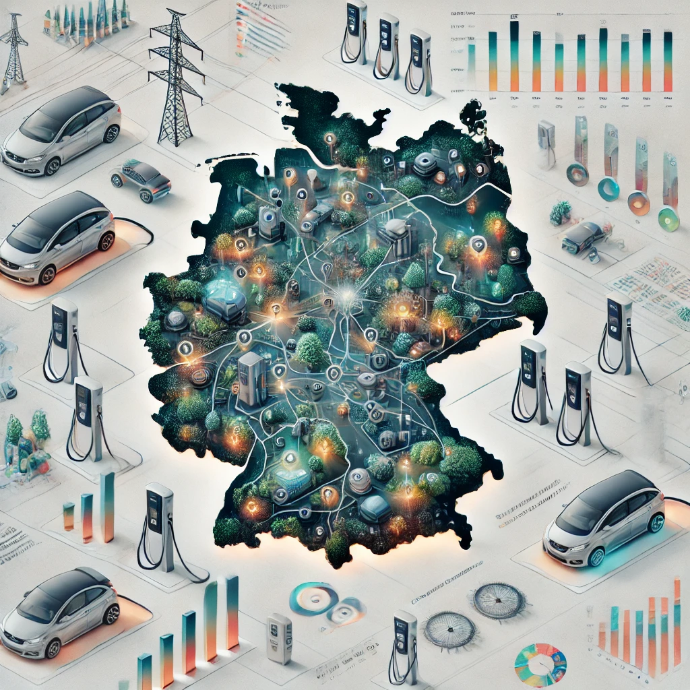
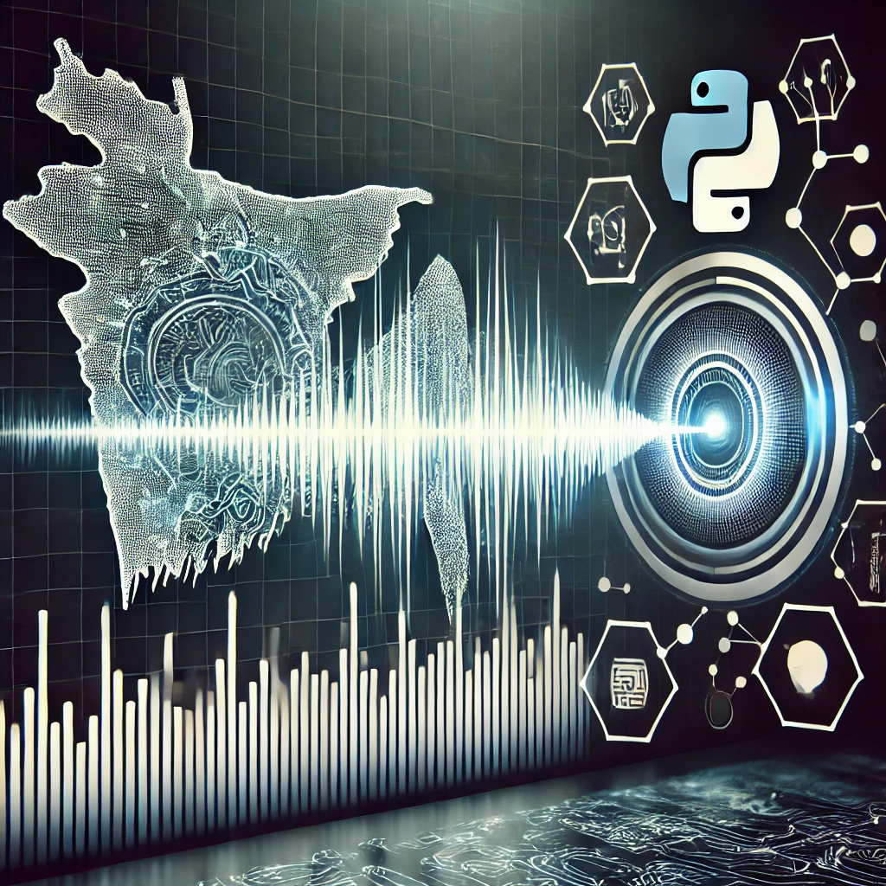

Face Detector with Landmarks
A sub-1 MB face detector with 5-point landmarks, built for mobile and edge deployment across ncnn, ONNX and PyTorch. Beats the original Face-Detector-1MB and RetinaFace baselines on WIDER FACE.
Read moreResearch code, deployable models and data pipelines — a few things I’ve taken all the way from an idea to something that runs.
A sub-1 MB face detector with 5-point landmarks, built for mobile and edge deployment across ncnn, ONNX and PyTorch. Beats the original Face-Detector-1MB and RetinaFace baselines on WIDER FACE.
Read more
An end-to-end ELT pipeline and analysis of Germany's public EV charging network — regional disparities, power capacity and evidence-based recommendations for where to build next.
Read more
A sequence-to-sequence ASR system for Bangla in PyTorch, with the full data loading, preprocessing, training and validation toolchain around it.
Read moreSource for everything here — plus experiments that never made it to a write-up — lives on my GitHub.